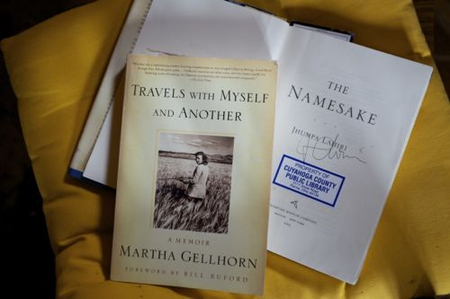

Year in Books, 2013

Martha Gellhorn and Jhumpa Lahiri’s signature.
This website began as a way to keep track of the books I read. But time, more than anything, has in the last few years determined that writing about each book read is impossible. Instead of long pieces posted here, I now write the titles in a list so I can be sure that they don’t drift off into a nameless, plotless, characterless ether. There’s nothing more annoying than not remembering what I’ve read.
Out of this year’s mass of words, which from a distance seems like a bag full of tangled wires, two writers more than particular books stand out: Jhumpa Lahiri and Martha Gellhorn.
Jhumpa Lahiri
Back when the Interpreter of Maladies came out it was impossible not to hear of Jhumpa Lahiri(Jhumpa Lahiri: Conversations (& Reading) in Rome). But that was years ago and so when she came into the library one day looking like a study abroad student, not a Pulitzer-Prize winning author, it took me awhile to put together who she was and what she wrote. But once I started reading Lahiri’s writing, I had to read what I could get my hands on.
The Namesake: The power of Lahiri’s prose is in its emotional depths—somehow she gets down into the being of her characters so that as a reader you’re in deep before you know it. This was true of The Namesake and The Lowland. And while I was down in those powerful depths, Lahiri made me cry, which I find exhilarating; it reminds me of reading as a kid and being so wound up with a story’s characters.
Unaccustomed Earth: The bright pink of this short-story collection’s cover sat by the couch and my bed for a month from where I would drift in and out of Lahiri’s worlds where everyone deals with identity in a country half their own. A theme very close to my heart.
The Lowland: Published this year, The Lowland is a sweeping story written in relatively few pages. It is distinctly different than Lahiri’s other books as it spreads beyond the bounds of the family, but has the same graceful prose and acuity of character.
Martha Gellhorn
Reading Martha Gellhorn is like jumping a ship, the refreshing freedom of the jump followed by the slam of the water. She is a proponent of the truth in the old-fashioned way, giving it however she thinks it will impact her readers the most. My reading of Gellhorn took me through her three roles as a writer: journalist, memoirist, and novelist.
The Face of War: This collection brings together Martha Gellhorn’s war writings. At first I thought the book was something I would only be able to take in bites, but once I began, I plowed through the whole thing. Her pieces on World War II are especially breathtaking. She told the stories of the soldiers on the field and civilians in the bombed out houses, and her work on Vietnam brings human faces to the masses of suffering. This book should be required reading.
Travels with Myself and Another: My introduction to Martha Gellhorn came through this book, part memoir, part travel book. Her descriptions of traveling, most often as a woman alone, are highly entertaining. She never takes pity on herself and always observes her surrounding through her crystal clear eyes.
The Stricken Field: Gellhorn wrote this novel while she was living in the Caribbean with Ernest Hemingway in 1940. She wrote it after witnessing much of the Spanish Civil War, and as a result of not being able to get back into Europe until the US entered WWII. It was written as a reaction to atrocities and witnessing the bravery of normal people. Combining this book with The Face of War seared the human price of war into my mind forever.
· · · · · · · · · · · · · · · · · · · ·